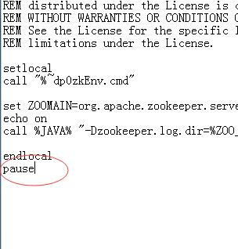
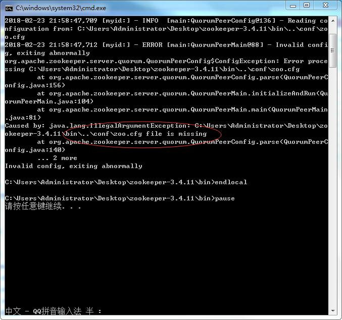
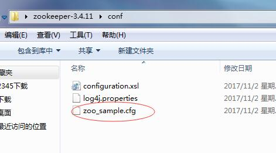
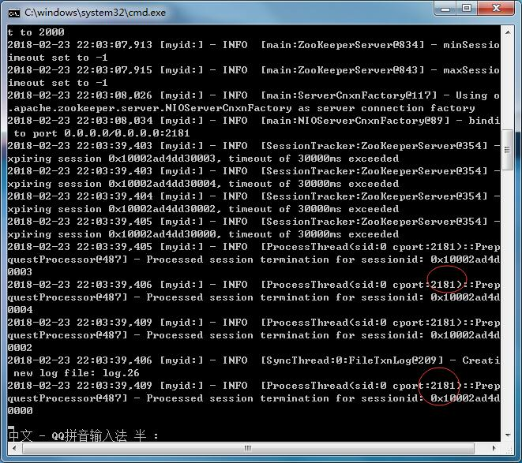
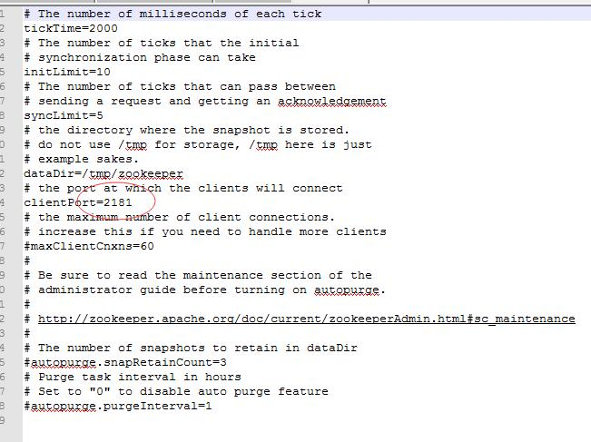

转载自 http://blog.java1234.com/blog/articles/379.html
再安装zookeeper之前，我们看下zookeeper简介 https://baike.baidu.com/item/zookeeper/4836397?fr=aladdin
再Dubbo中 官方推荐用zookeeper作为注册中心，我们来安装下zookeeper；
zookeeper支持windows中运行，也支持linux中运行，开发的时候，我们可以用windows，但是企业项目运行，基本都是linux，我们基础课程讲的话 为了方便，直接 windows解压运行。后面实战项目课程，都是Linux下运行；运行原理一样的，一个是启动bat，linux下启动sh即可；大伙linux基础不行的话，补下知识；
zookeeper主页 http://zookeeper.apache.org/
找到下载页面 镜像http下载 下载一个稳定版本 zookeeper-3.4.11.tar.gz 其他测试版本不要下载；
我们演示下windows下的zookeeper的运行；
解压zookeeper-3.4.11.tar.gz
我们执行运行bin目录下的zkServer.cmd （linux下是zkServer.sh）
运行时候是一闪而过，说明启动报错了；
我们要看具体错误信息的话，用记事本打开zkServer.cmd文件；
文件最后，加个pause暂停即可；

我们再运行zkServer.cmd
可以看到报错信息：

主要的意思就是 conf下没有找到zoo.cfg文件；
我们再看下conf目录下；

有个zoo_sample.cfg文件，这个是一个demo文件，zookeeper官方的意思，这个是一个demo配置文件，我们可以自定义配置，我们暂时不细讲zookeeper，所以直接吧 zoo_sample.cfg改成zoo.cfg即可；
改完之后，我们再启动zkServer.cfg，如图：

说明启动成功了，这里的2181是zookeeper的默认端口，刚才的zoo.cfg里，我们可以配置；

具体测试，我们后面讲到发布服务，可以真正看到效果；